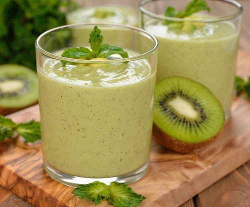
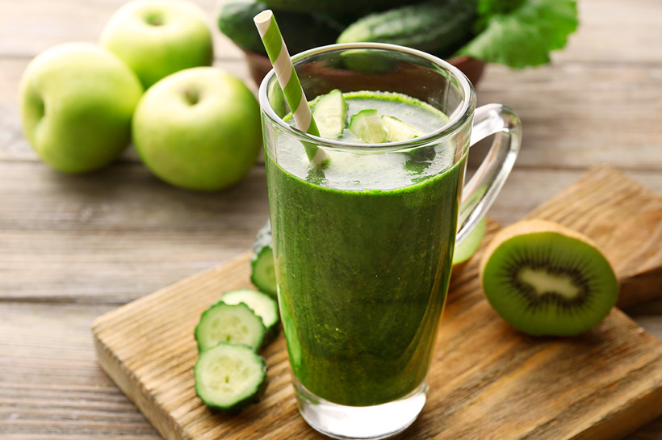
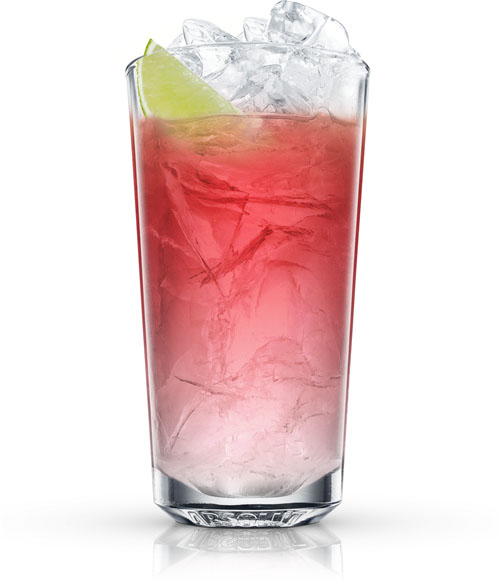

Mezcla en una jarra o bowl, el vodka, el helado de limón y una medida de vino blanco hasta que quede espeso y helado. Termina agregando el resto de vino blanco y mezcla. Decora con hojas de menta.
En una coctelera se añaden todos los ingredientes, incluido el hielo picado. Agitar fuertemente hasta que el hielo se escarche y se mezclen bien todos los líquidos, formando una ligera emulsión con algo de espuma.
Ingredientes
Ron Blanco
Tequila
Vodka
Crema de Coco
Zumo de limón
Hielo
JUGO CON KIWI
Preparación
Se debe pelar y lavar un kiwi, lavar cinco hojas de espinaca, tres de lechuga y una cucharada de miel pura. Luego se llevan a la licuadora junto con un vaso de agua hervida, se licuan hasta que todos los ingredientes estén correctamente incorporados y luego se pasa por un colador y se puede beber.
Este batido puedes prepararlo utilizando medio nopal, dos ramas de apio, el jugo de dos toronjas, una rebanada de piña y una cucharada de miel. Todos los ingredientes se licuan hasta que estén bien incorporados y estará listo para beberlo.
Pelamos los mangos y los albaricoques. En la batidora mezclamos la pulpa del mango y de los albaricoques, junto con el zumo de limón, el edulcorante, el yogur y los cubitos de hielo. Lo trituramos todo con ayuda de la batidora hasta que quede un batido de mezcla homogénea.
Ingredientes
Mango
Albaricoque
Limón
Yogurt natural
Edulcorante líquido
Hielo
KIWI Y MANZANA
Preparación
Pelamos las manzanas y los kiwis y pasamos por la licuadora o batidora, añadiéndole el zumo de naranja. Es importante servirlo pronto para que no se oxide perdiendo el color y las propiedades vitamínicas.
Ingredientes
Kiwi
Manzana
Zumo de naranja
SEA BREEZE
Preparación
En un vaso, añade el vodka, el jugo de arándano y, finalmente, el jugo de toronja. Mézclalo y listo para disfrutar.
Coloca en una licuadora el jugo de 1 limón, media taza de perejil, 1 tallo de apio, 5 hojas de espinacas, 1 trozo pequeño de jengibre, medio pepino y 1 manzana sin semillas pero con cáscara. Mezcla perfectamente y listo.
En una olla o cacerola, lleva el agua a hervir y mezcla con el azúcar hasta que se disuelva acerca de 1 minuto hasta que quede un almíbar.
En una licuadora, agrega la sandia y licua hasta que este suave. Cuela el jugo en un bowl y descarta la pulpa.
En una jarra, combina el almíbar de azúcar con el jugo de lima, los arándanos y algunas hojas de menta. Agrega el jugo de sandia y el tequila. Refrigera por dos horas.